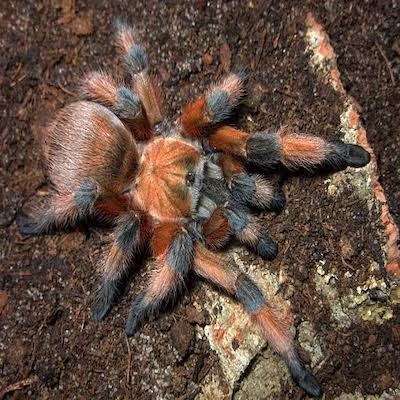

My Favorite Tarantulas
Welcome to the world of Tarantula Collecting. On this page I will talk a little about my favorite T's to collect, and a little about where they originate from in the world.
Most people see Tarantulas as big scary spiders. Some will want to kill them others will want to run from them. I am of a different type though, I catch them!
I have a brother who works about 12 miles from the Texas and Mexico Border. We can find three different species of Tarantula in this one area. One of witch can only be found in this region of the world.
We go out just after dark with our Kawasaki Mule, laced with powerful lights, lovingly dubbed "The Tarantula Hawk". Armed with a stick, a couple of 5 gallon buckets, and catch cups with lids. We drive around slowly and use the powerful lights of the Tarantula Hawk to find the Tarantulas.
They usually are sitting either just outside their burrows or up to 2 or three feet from them depending on how hungry they are. Once we spot on we get out and slowly approach the spider. One of us uses the stick to block the burrow entrance then the other places the catch cup over the spider. Then we slide the lid in from underneath. Sometimes we find that if they are in their burrow just poking out or if they dive back in we can use a method we call the "Texas Tickle" we can lure them back out of the hole.
The Rio Grande gold tarantula (Aphonopelma moderatum) is a spider found in Texas. As its name suggests, it is indigenous to the Rio Grande Valley. They inhabit a specific habitat along a small portion of our state’s southern border, along the Rio Grande from near Sanderson eastward to near Del Rio. The dry, gravelly soil on top of limestone is generally thought to be one of the harshest environments in our state. Surprisingly enough, this habitat, while extremely dry and harsh on the surface, can be quite moist beneath the surface in myriad cracks, crevices and catacombs. These underground mazes provide sufficient humidity for this moisture-dependent species to thrive. In fact, the most of their lives are spent in this humid underground lair. This is especially true for the females, who allow food to come to them, ambushing their prey as it passes by the entrance to their domains. The females are tan to orange, with dark legs. On the other hand, the males are solidly black or dark brown.

Tliltocatl vagans (synonym Brachypelma vagans) is a species of tarantula known commonly as the Mexican red rump. It ranges predominantly in Mexico (including the Yucatán Peninsula), but is also found in Central America. They are terrestrial, burrowing spiders. The reason for the name red rump is because of its distinctive red hairs on its abdomen. Like most tarantulas, they will eat anything they can overpower, which is usually insects, but small lizards and rodents may also be consumed. They can grow up to a solid 6.5 inch leg span, with males typically being smaller and thinner than the females. They prefer shrubland habitats. The T. vagans is frequently kept and bred in captivity. They are typically docile, though they can be skittish and prone to releasing urticating hairs. Females are long-lived, potentially reaching 15 years of age. Due to its popularity in the pet trade, T. vagans is listed under appendix II of CITES (under its former name) to prevent illegal removal and international trade. This trade, combined with habitat destruction and a high rate of mortality prior to sexual maturity, means that T. vagans is considered vulnerable to extinction

The cobalt blue tarantula or Cyriopagopus lividus is a species of tarantula which is in the family Theraphosidae which is native to Myanmar and over the border into Thailand. It was originally described as Haplopelma lividum. The cobalt blue tarantula is a medium-sized tarantula with a leg span around 13 cm (5 in). It is noted for its iridescent blue legs and light gray prosoma and opisthosoma, the latter of which may contain darker gray chevrons. Males and females look the same until the ultimate (final) molt of the males. At this point, the male exhibits sexual dimorphism in the form of a light tan or bronze coloration and legginess. Additionally, males gain a palpal bulb on the pedipalps and tibial apophyses (mating hooks). The female eventually becomes larger than the male and lives years longer.The cobalt blue tarantula is a fossorial species and spends nearly all of its time in deep burrows of its own construction.
Now we come to the most coveted Tarantula in the T collecting world And my personal favorite. The beauty of this spider is un-paralleled. It has Bright blue body with yellow spots at certain joints in its legs. With a beautiful white pattern that covers its body. It is a highly endangered species in the wild. Luckily though people have been and still do breed them ones that are in captivity which allows for this beautiful specimen to be owned and enjoyed by the average collector. Though a word of caution for the new collector this is not a BEGINNER level Tarantula to own. They are by far the fastest Tarantula on the planet, and they have medically significant venom. So if you decide to obtain one it is advisable not to handle this species. You will find videos on the internet of people handling these T's, DO NOT follow their stupidity. This species is meant to be enjoyed by looking at them only. They have an insane feeding response once they have settled into their habitat.

Poecilotheria metallica, also known as the peacock tarantula or Gooty Sapphire Ornamental. It is an Old World species of tarantula. It is the only blue species of the genus Poecilotheria. Like others in its genus it exhibits an intricate fractal-like pattern on the abdomen. The species' natural habitat is deciduous forest in Andhra Pradesh, in central southern India. It has been classified as Critically endangered by the IUCN.
While it is young, P. metallica is less chromatic, the coloring turns to blue as it matures. This blue is much less significant in the mature males. Males also have more slender bodies, and their legs are longer. The definitive trait of a mature male are the revelation of emboli at the end of their pedipalps following their "mature molt."Females can be determined through molt confirmations before maturity. When full size, the leg span of P. metallica is 15–20 cm (6–8 in). Females typically live for 11 to 12 years, or, in rare instances, for up to 15 years. Males live for 3 to 4 years.
Poecilotheria metallica is found only in a small area of less than 100 square kilometres (39 sq mi), a reserve forest that is nonetheless highly disturbed. Surveys of adjacent forest have failed to observe this species. The type specimen was discovered in a railway timber yard in Gooty about 100 km southwest of its known range, but it is believed to have been transported there by train.
Poecilotheria metallica's behavior parallels that of many arboreal spiders. In the wild, P. metallica lives in holes of tall trees where it makes asymmetric funnel webs. The primary prey consists of various flying insects. Spiders of this genus may live communally when territory, i.e. the number of holes per tree, is limited. The species is skittish and will try to flee first, and will also flee when light shines upon it, as it is a photosensitive species. Under provocation, however, members of the species may bite.
There has never been a recorded human death from its bite. However, P. metallica's bite is considered medically significant, with venom that may cause intense pain, judging from the experience of keepers bitten by other spiders in the genus.The vast majority are "dry bites," where no venom is injected into the handler. The mechanical effects of the bite can still be worrisome, as an adult's fangs can reach nearly 3/4 of an inch in length. P. metallica can move rapidly and may defend itself when cornered. Venom may produce a heart-rate increase followed by sweating, headache, stinging, cramping, or swelling. Effects can last for up to a week. However, in extreme bites from the genus Poecilotheria, effects may still be felt months later.